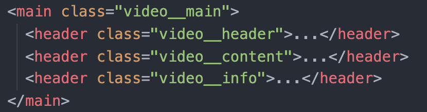
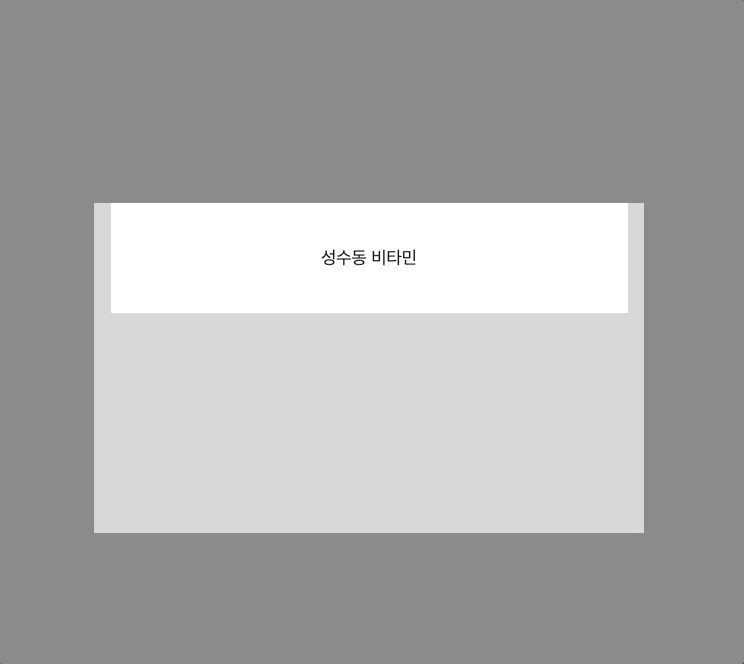
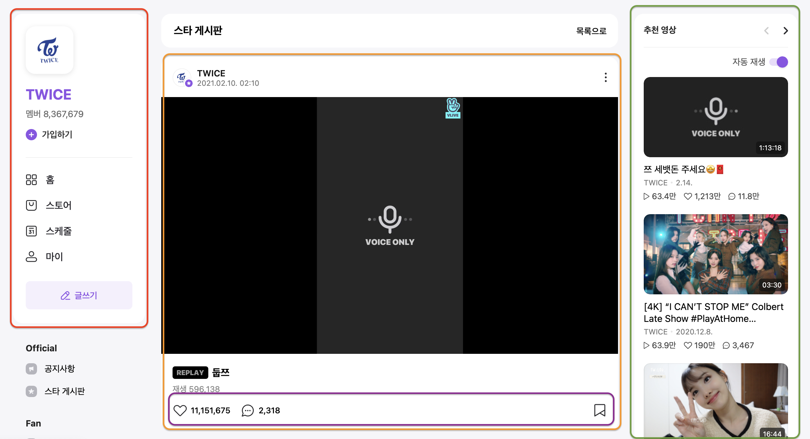
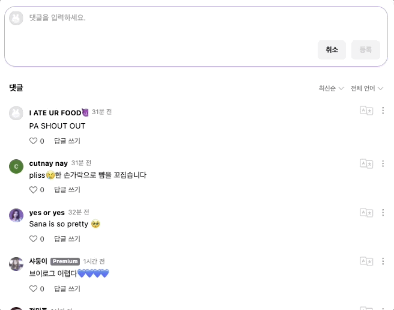
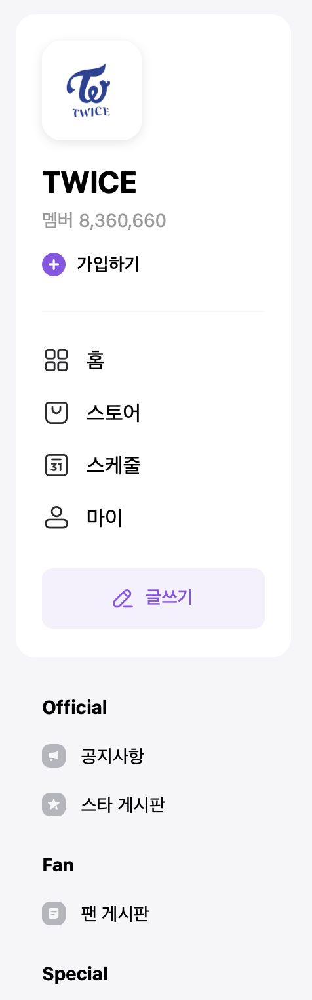
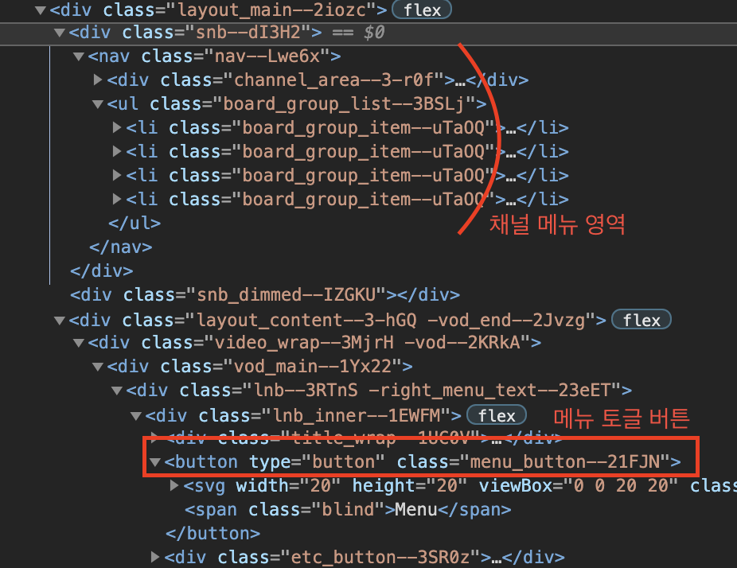
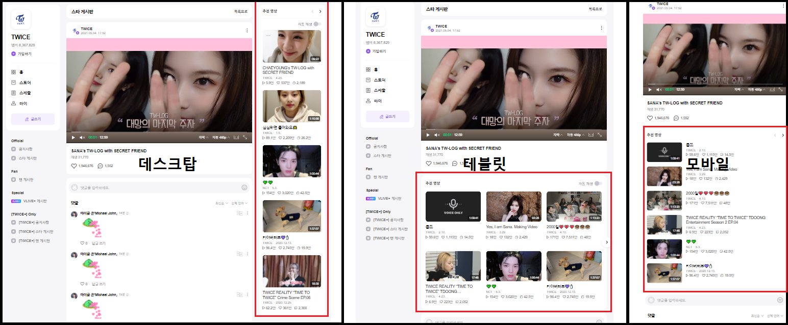

성수동 비타민 - 김영종, 김정원, 정두영
V LIVE 사이트를 클론코딩 하기로 선정.
V LIVE는 K-POP STAR들의 라이브 방송을 송출해 주는 서비스로 최근 K-POP의 열풍 덕분에 글로벌 트래픽 증가
하지만 글로벌하게 서비스함에도 접근성에 대해 아쉬운 부분이 존재.
기존 VLIVE의 LightHouse 점수
마크업 설계부터 접근성을 고려하여 사이트를 재설계
새롭게 만든 VLIVE의 LightHouse 점수 (동영상을 IFRAME으로 삽입하여 만점을 받지는 못했다.)
페이지의 구성은 크게 3단으로 되어있으며 데스크탑, 타블렛, 모바일에 따라 레이아웃이 달라진다.
반응형 레이아웃을 위한 설계 방법을 고민
다양한 의견을 팀원들과 이야기하여 grid를 통해 레이아웃을 구성하면 적합하다고 판단하여 그리드를 사용
공통적으로 사용되는 스타일과 컴포넌트는 믹스인을 미리 설계하여 팀원들과 함께 사용했다.
@mixin box($color: $white, $width: auto) { background-color: $color; width: $width; @include desktop { border-radius: 15px; } }
@mixin buttonBox($isCircle: false, $size: rem(30px), $bg: transparent) { margin: 0; padding: 0; border: none; border-radius: rem(8px); appearance: none; background: none; cursor: pointer; background-color: $bg; @if $isCircle { width: $size; height: $size; border-radius: 50%; } &:hover { background-color: mix($bg, rgba(0, 0, 0, 0.15)); } }
접근성을 고려해 설계해야 하기 때문에 레이아웃부터 논리적인 순서를 고려해 마크업했다.
보이는 순서는 GRID를 통해 정렬되기 때문에 논리적인 마크업에 집중할 수 있었다.
탭을 통해 이동시 동영상 섹션을 모두 탐색해야 이동할 수 있는데, 그러기에는 댓글이 너무많다!
header 부분
video 부분(video content와 video detail)
하트와 댓글을 남길 수 있는 video post 부분
나중에 video__header 와 video__content 를 상단에 sticky 하도록 구현
video__header
video__content

video__header -> position: sticky; video__content -> position: sticky;

position: sticky
javascript로 is-fixed 클래스를 동적으로 부여
is-fixed
is-fixed 일 때 position: fixed
position: fixed
&__content { // 미디어 쿼리, 동적인 클래스 추가 @include sticky { &.is-fixed { position: fixed; // 위 두가지가 한번에 주어졌을 때 IE에서 이를 인식하지 못하는 문제 발생 ... } } }
&__content { &.is-fixed { position: fixed; // 이렇게 미디어 쿼리를 제거해주고, ... // 그 대신에 javaScript로 미디어 쿼리 조건을 체크해줌 } }
window.innerWidth

WCAG 1.3.2 Meaningful Sequence
동영상 정보를 동영상 플레이어보다 먼저 마크업
스크린 리더 고려
탭의 자연스러운 이동
채널 아바타부터 시작해 탭을 누르고 있지만 탭이 어디 위치하고 있는지 전혀 알 수 없음
그러다가 갑자기 추천영상으로 탭이가서 혼란스러움
WCAG 2.1 - 2.4 Navigable
WCAG 2.4.7 Focus Visible
채널 아바타부터 시작해 탭을 누를 때, 탭이 어디에 위치해 있는지 명확하게 보여줌
그 다음으로 어디를 탐색하고 싶은지 정할 수 있도록 함
WCAG 1.4 Distinguishable 의 Contrast 기준을 만족하지 못함
WCAG 1.4.6 Contrast (Enhanced) 명도 대비 확실하게 접근성을 향상시킴
댓글을 다는 form
form
작성된 댓글들을 확인할 수 있는 comments__container
comments__container
각각의 댓글들
댓글: 좌, 우 position: absolute
position: absolute
fieldset
focus-within

WCAG 2.4.3 Focus Order
댓글 입력칸부터 차례대로 tab
탭 아웃라인이 중간중간 제대로 보이지 않음
탭의 순서: 아바타, 작성자, 좋아요, 답글 쓰기, 언어 설정, 더보기
탭의 아웃라인을 확실히 보여줌
탭의 순서
댓글 입려칸(입력칸 -> 이모티콘 -> 취소 -> 등록)
최신순(정렬) -> 전체 언어
언어 설정 -> 더보기
댓글들(작성자 -> 좋아요 -> 답글 쓰기)
두 상태를 고려해서 마크업을 진행

@mixin spriteIcon($w, $h, $x, $y) { display: inline-block; vertical-align: middle; width: rem($w); height: rem($h); background-image: url("/src/img/vlive_sprite.png"); background-size: 538px 518px; background-position: ($x * -1) ($y * -1); }
해당 믹스인은 다음과 같이 적용
//... @at-root .icon { &--plus { @include spriteIcon(18px, 18px, 201px, 498px); margin-right: rem(5px); } &--home { @include spriteIcon(18px, 18px, 473px, 467px); margin-right: rem(10px); } //...
@each
$icon-list: ( home: -473px, store: -277px, schedule: -239px, my: -182px, ); &-link { @each $name, $x in $icon-list { // 아이콘 이름과 X좌표를 받는다. &--#{$name}:hover { // 각 이름에 해당하는 링크에 호버시 color: $primary-color; > .icon--#{$name} { // 각 이름에 해당하는 아이콘의 속성을 변경한다. background-position-x: $x + 19px; // 입력받은 x좌표에 19px를 추가 } } } }
WCAG 성공기준 "2.4.7 식별 가능한 포커스"에 준하기 위해서는 탭으로 포커스를 할 때 반드시 시각적으로 포커싱 되어있음이 확인되어야 한다.
하지만 중간중간 아웃라인이 보이지 않는 영역과 아웃라인이 잘려 보이는 부분이 존재.
스타일 속성을 통해 포커스시 아웃라인을 지우지 않도록 하여 모든 포커스 아웃라인이 정상 출력되도록 유지 했다.
WCAG 성공기준 "2.4.10 섹션(section) 헤딩"에 준하기 위해서는 각 콘텐츠의 섹션별로 식별 가능한 이름이 제공되어야 함
하지만 채널 정보에 대한 헤딩이 존재하지 않음
다음과 같이 섹션의 라벨을 지정해줘서 해결했다.
<!-- ... --> <aside class="channel" aria-labelledby="channelLabel"> <div class="channel__container"> <h2 class="channel__heading a11y-hidden" id="channelLabel">채널 정보</h2> </div> </aside> <!-- ... -->
모바일에서 탭을 사용하지 않을거라 생각하겠지만 저시력자들의 경우 화면을 확대하여 사용
WCAG 성공기준 "1.4.10 재배치"에 의거 반응형 사이트의 경우 화면을 확대하여 상대적으로 뷰포트의 사이즈가 줄어들었을 때 스크롤이 생기지 않게하기 위해 모바일 레이아웃으로 페이지를 탐색할 수 있어야 함
메뉴 토글버튼이 좌측 채널정보보다 뒤에 마크업 되어있고, 채널정보에 포커스가 가능해서 모든 채널 정보를 순회하고 겨우 메뉴를 열 수 있음
메뉴 토글버튼을 포커스하여 메뉴를 열어도 탭을 이용하면 메뉴버튼 아래로 포커스가 이어진다. 메뉴를 열어도 메뉴 안쪽으로 포커스가 어려운 문제가 있다.
"성공기준 2.4.3 포커스 순서"에 준하기 위해서는 이런 문제를 해결해야 한다
이 문제는 JS를 사용해야만 해결할 수 있었기 때문에 토글 기능에 다음과 같은 코드를 추가했다.
menuToggle.addEventListener("click", (e) => { classToggleHandler(e, menu, "is-active", "on"); classToggleHandler(e, backdrop, "is-active", "on"); menu.setAttribute("tabindex", "0"); // 메뉴가 열리면 탭인덱스 속성을 추가 menu.setAttribute("role", "dialog"); // 메뉴가 열리면 role속성으로 dialog를 추가 menu.setAttribute("aria-labelledby", "channelLabel"); // dialog의 label을 지정 menu.focus(); // tabindex가 지정된 메뉴로 포커스 });
다음과 같은 순서로 문제를 해결했다.
추가로 키보드 인터렉션을 통해 메뉴를 닫을 때 다시 버튼으로 포커스가 갈 수 있도록 설정하여 "3.2.5 요구에 의한 변경"도 충족할 수 있었다.

데스크탑, 테블릿, 모바일을 기준으로 상당 부분 레이아웃이 변경된다.
기존 마크업 순서
변경 마크업 순서
스크린리더 사용자를 위한 마크업 배치 고려
문제점
영상에 대한 정보를 모두 듣고나서 버튼을 클릭하기 위해 위쪽으로 올라와 버튼을 클릭해야 한다.
다음 리스트 보기 버튼 을 최하단에 배치했다. 추천 영상 목록에 있는 영상들을 먼저 읽어준 후에 다음 리스트 보기 버튼을 클릭할 수 있도록 구성하는 것이 사용자의 입장에서 더 편리할 것이라 생각했기 때문이다.
참고: flex 속성을 사용하면 인라인, 블록 요소에 상관없이 쌓이는 흐름을 제어할 수 있다.
기존 사이트: 자동 재생 버튼에 아웃라인이 적용되어 있지 않음
&:focus { + .related__check-lb { outline: 2px solid black; } } &:focus:not(:focus-visible) { + .related__check-lb { outline: none; } }
구현 결과: 마우스로 포커스 된 경우는 아웃라인이 표시되지 않는다.
focus-visible
크로스 브라우징에 완벽히 대응하지는 못했지만, 아래 코드를 활용하면 각각의 브라우저 별로 미디어 쿼리를 적용할 수 있다는 사실을 알아냈다.
@media all and (-ms-high-contrast: none) { /* IE10+ CSS styles go here */ .related__check { @include a11yHidden; &:focus { + .related__check-lb { outline: none; } } } }
글로벌 서비스기 때문에 영어로 제목이 올라오는 경우가 다수 있었다. 부분적으로 언어속성을 적용해서 사용자 에이전트가 언어의 정보를 올바르게 읽을 수 있도록 설정했다.
<p class="video__title" lang="en">SANA’s TW-LOG with SECRET FRIEND</p>
부가 정보를 읽어줄 때, 각 정보에 라벨이 붙어있지 않아 어떤 정보인지 구분하기 힘든 문제점이 있었다.
<em class="related__group-name"> <span class="a11y-hidden">그룹 명</span> TWICE </em> <div> <span class="a11y-hidden">등록일</span> <time class="related__upload-date" datetime="2020-04-30T18:10"> 2020.4.30. </time> </div>
위와 같이 각 정보마다 해당 라벨을 span 태그로 삽입해서 어떤 정보인지 구분할 수 있도록 해주었다.
2. 사용자가 직접 순서를 선택 2.1 채널 보기 2.2 추천 영상 보기